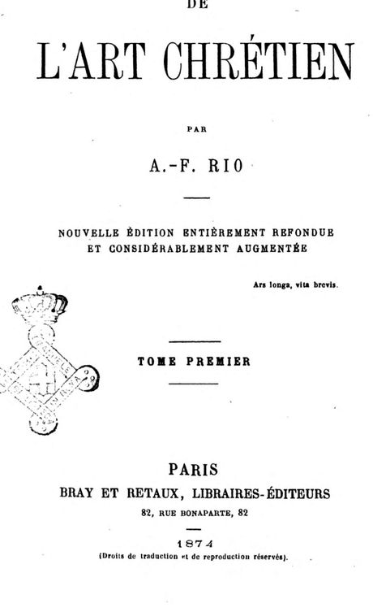
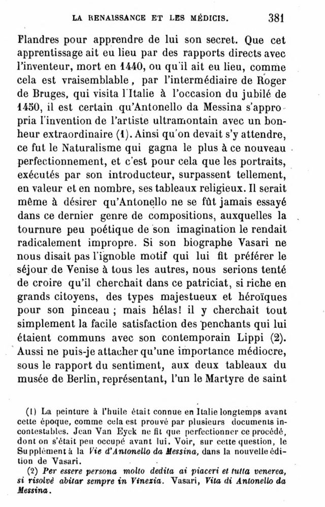

“Antonello da Messina … avait fait le voyage de Flandres” (tome I, pp. 380–381)

French: Paris 1874, tome I, ch. V (“La Renaissance et les Médicis”), foot of p. 380 and p. 381, scans n383–n384, with Rio’s notes. Highlighted: what Lecky reports.

Another discovery, no less important, which affected not the quantity but the quality and durability of the works, was that of oil painting, brought into Italy, at the very time we are speaking of, by a Sicilian painter named Antonello da Messina, who, having seen a picture by John of Bruges at Naples, had made the journey to Flanders to learn its secret from him. Whether this apprenticeship came about through direct dealings with the inventor, who died in 1440, or, as is likely, through Roger of Bruges, who visited Italy for the jubilee of 1450, it is certain that Antonello da Messina made the transalpine artist’s invention his own with extraordinary success. … If his biographer Vasari did not tell us the ignoble motive that made him prefer living in Venice to anywhere else, we should be tempted to think he sought in that patriciate, so rich in great citizens, majestic and heroic types for his brush; but alas! what he sought there was simply the easy satisfaction of the inclinations he shared with his contemporary Lippi.
(1) Oil painting was known in Italy long before this time, as several incontestable documents prove. Jan van Eyck only perfected the process, which had been little attended to before him. … (2) “Being a person much given to pleasures, and wholly venereal, he resolved to live always in Venice.” Vasari, Life of Antonello da Messina.
Original French
Une autre découverte, non moins importante, et qui influa, non pas sur la quantité, mais sur la qualité et sur la durée des produits, fut celle de la Peinture à l’huile, introduite en Italie, précisément à l’époque dont nous parlons, par un peintre Sicilien nommé Antonello da Messina, qui, après avoir vu un tableau de Jean de Bruges à Naples, avait fait le voyage de Flandres pour apprendre de lui son secret. Que cet apprentissage ait eu lieu par des rapports directs avec l’inventeur, mort en 1440, ou qu’il ait eu lieu, comme cela est vraisemblable, par l’intermédiaire de Roger de Bruges, qui visita l’Italie à l’occasion du jubilé de 1450, il est certain qu’Antonello da Messina s’appropria l’invention de l’artiste ultramontain avec un bonheur extraordinaire. … Si son biographe Vasari ne nous disait pas l’ignoble motif qui lui fit préférer le séjour de Venise à tous les autres, nous serions tenté de croire qu’il cherchait dans ce patriciat, si riche en grands citoyens, des types majestueux et héroïques pour son pinceau; mais hélas! il y cherchait tout simplement la facile satisfaction des penchants qui lui étaient communs avec son contemporain Lippi.
(1) La peinture à l’huile était connue en Italie longtemps avant cette époque, comme cela est prouvé par plusieurs documents incontestables. Jean Van Eyck ne fit que perfectionner ce procédé, dont on s’était peu occupé avant lui. … (2) Per essere persona molto dedita ai piaceri et tutta venerea, si risolvè abitar sempre in Vinezia. Vasari, Vita di Antonello da Messina.
The “époque dont nous parlons” is fixed on p. 380 by Maso Finiguerra’s famous engraved pax, which “appeared at Florence in 1452”: hence Lecky’s “about 1452”. “Jean de Bruges” is Rio’s name for Jan van Eyck, as was common at the time.
Further down the rabbit hole
Sources that Lecky cites in the notes next to the ones that cite this page.
- Ciampini, Vetera monimentaThe saint’s halo: a sign of eternity, or a shield against pigeons?
- Didron, Iconographie chrétienneHow medieval art pictured Christ the Judge
- Ford, A Handbook for Travellers in SpainThe Alhambra as a tent turned to stone, and the sculptor who prayed before he carved
- Codex Theodosianus XVI.3, De monachisTheodosius banishes the monks to the desert, and lets them back two years later
- Vitet, Études sur l’histoire de l’artWhy the saints in Rome’s mosaics grew ugly: Lecky blames the monks, his source blames the barbarians
- Heyne, Opuscula academicaWere the statues of Daedalus wooden? Heyne had already answered Lecky’s objection


Backlinks
Every place in Rationalism in Europe that links to this page (generated automatically when the site is built).